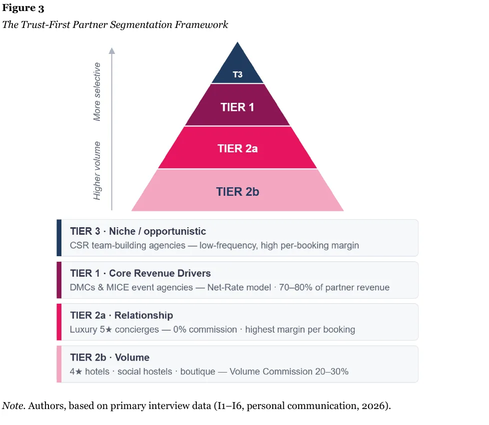
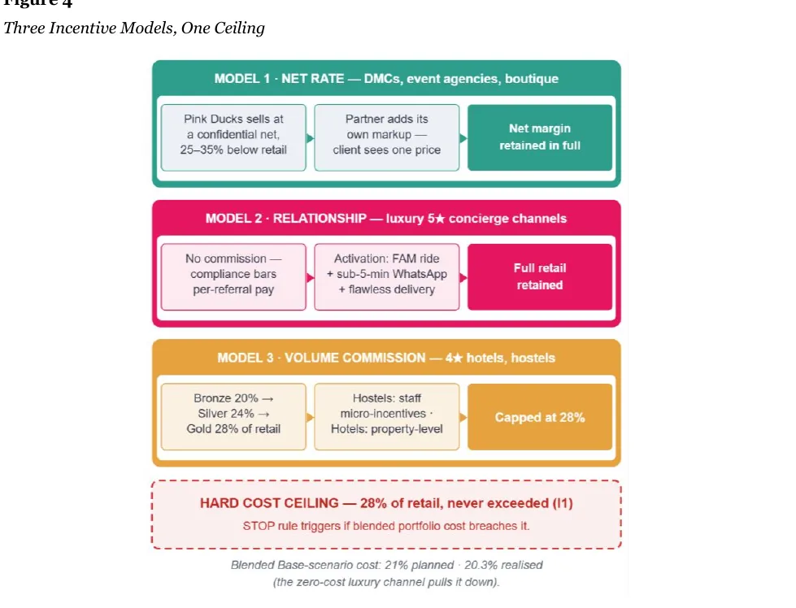

Stratégie B2B · Partenariats · Mémoire de master
Pink Ducks : stratégie de croissance par partenariats
Comment un opérateur de tours à vélo électrique à Barcelone peut vendre en direct, sans dépendre des plateformes
Le défi
Pink Ducks vendait presque tout par des agences en ligne : commissions élevées, conditions imposées, aucun lien direct avec le client. L'objectif : un canal B2B direct, sans budget marketing.
Comment nous avons travaillé
Nous avons écrit nos hypothèses avant d'aller sur le terrain, puis nous les avons testées : six entretiens réels et neuf sources de marché. Une grille de critères pondérés a classé les partenaires, et nous nous y sommes tenus.

(ouvre le fichier dans un nouvel onglet)Ce que le terrain a invalidé
Les concierges des hôtels cinq étoiles n'ont pas le droit d'accepter une commission, ni d'afficher un QR code sur leur comptoir.
Tout notre modèle d'incitation reposait sur la commission et le suivi par QR code. Sur le segment le plus rentable, il était inutilisable. Nous l'avons refait au lieu de l'ignorer : pour les hôtels de luxe, une relation de confiance sans commission, où le concierge réserve directement ; le suivi par QR code est resté pour les auberges et les hôtels quatre étoiles.

(ouvre le fichier dans un nouvel onglet)Ce que nous avons livré
- Vingt partenaires prioritairesClassés avec des critères pondérés, là où la prospection n'en avait aucun.
- Trois modèles d'incitationTarifs nets confidentiels pour les agences, relation sans commission pour le luxe, commissions par paliers pour les volumes.
- Un pilote de 90 joursAvec des seuils de réussite et d'arrêt fixés d'avance : moins de 20 % de partenaires contactés qui recommandent une réservation en 60 jours, et on arrête.
- Une base documentaire standardiséeGrilles tarifaires, fiches co-brandées, protocole opérationnel, et un système qui rend chaque réservation traçable.
Résultat
La stratégie projette entre 38 500 € et 75 700 € de revenu net supplémentaire la première année. Nous avons aussi écrit noir sur blanc que les relations de confiance ne s'exportent pas : elles se reconstruisent ville par ville.
Ce que j'en retiens pour piloter des opérations : une hypothèse plausible peut être fausse, et seul le terrain le dit. Fixer les seuils avant le lancement et refaire le modèle plutôt que le contourner, c'est la discipline de l'usine appliquée à un partenariat.
→ L'application vocale conçue pour absorber le volume : Barcelona CycleGuide